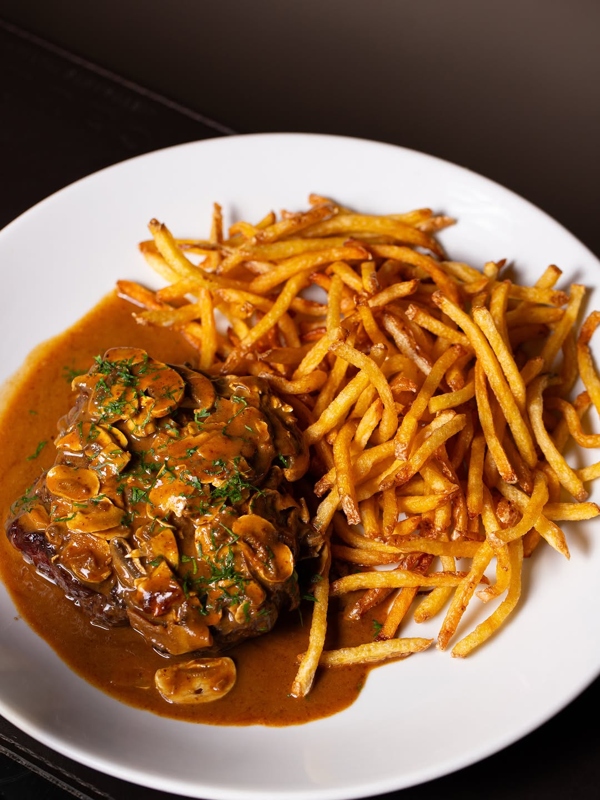

Cupim com fettuccine na manteiga de sálvia
Cupim cozido lentamente no próprio molho, servido sobre fettuccine fresco na manteiga de sálvia. Finalizado na mesa com queijo ralado na hora.
Cupim, fettuccine fresco, manteiga de sálvia, queijo curado
R$ 145